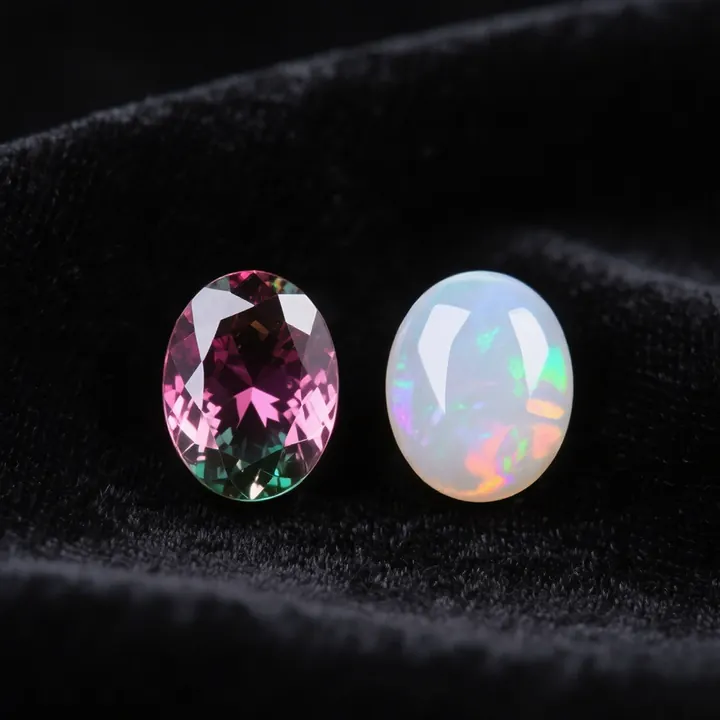

石英家族：瑪瑙、玉髓與虎眼石
石英是最常見的礦物，卻能長出最豐富的寶石——瑪瑙的條帶、虎眼的金光，都是石英的變奏。

核心定義
石英（SiO₂）是最常見的造岩礦物，家族龐大：顯晶質（水晶、紫水晶、黃水晶）與隱晶質（瑪瑙、玉髓、虎眼石、碧玉）。隱晶質石英的晶體太細小，肉眼看不見顆粒——質地溫潤、適合雕刻。
明星成員：瑪瑙（agate，條帶狀紋理）、玉髓（chalcedony，均勻溫潤）、虎眼石（tiger's eye，金黃貓眼光）、碧玉（jasper，不透明多色）。硬度皆 7——「石英家族」是珠寶世界的基石。
特徵與分類
| 成員 | 特徵 | 市場 |
|---|---|---|
| 瑪瑙 | 條帶紋理 | 平價雕刻 |
| 玉髓 | 均勻溫潤 | 親民 |
| 虎眼石 | 金黃貓眼光 | 受歡迎 |
| 碧玉 | 不透明多色 | 雕刻材料 |
瑪瑙的條帶是「同心圓狀」的沉積紋理（像樹輪）；虎眼石的「貓眼光」來自纖維狀石英的平行排列（光線反射成金色光帶）。兩者都是「結構產生美」的經典。
科學原理
隱晶質石英的結構：極細微的晶體（微米級）緻密交錯——肉眼無法分辨顆粒，呈現溫潤質感。瑪瑙條帶：二氧化矽膠體在空腔中逐層沉澱（含雜質的層次不同）——像樹輪一樣記錄沉澱歷史。
虎眼石的光學：石英纖維（原石棉礦物被石英取代）平行排列——光線在纖維間反射，形成移動的「貓眼光帶」。鑑定石英家族：硬度 7、折射率 1.54、比重 2.65——家族成員共同的身分證。
鑑定與鑑別方法
- 折射率 1.54 確認石英家族
- 看紋理：瑪瑙條帶、虎眼纖維光
- 掂比重：2.65
- 區分染色瑪瑙：裂隙滲色
- 排除玻璃仿品：氣泡
市場行情與保養建議
行情：石英家族是「平價寶石」——瑪瑙、玉髓、虎眼石每件數十至數百人民幣。它們的美在「紋理與設計」——雕刻與鑲嵌工藝常讓平價材料化身藝術品。染色瑪瑙（紅色、藍色）是市場常見處理。
選購：石英家族看「紋理美感與工藝」——天然紋理自然流暢、染色呆板滲色。它是「設計的畫布」，材料親民、工藝決定價值。
常見誤區
市面大量瑪瑙（紅、藍、黑）是染色處理——染色瑪瑙需標示，天然色瑪瑙以灰白褐為主。
虎眼石是石英（含石棉纖維）——名字浪漫，與老虎無關。它的「虎眼」，是光學的貓眼效應。
冷知識
人類在數千年前就開始使用瑪瑙（美索不達米亞印章）——它見證了人類文明的珠寶史。
青石棉纖維被石英取代，形成平行纖維結構——那條金色光帶，是「石棉的遺產」。
反直覺觀點
瑪瑙玉髓平價，但「火瑪瑙」（虹彩）、「水膽瑪瑙」（含水）有收藏行情——石英家族也有隱藏的天花板。
天然虎眼石的貓眼光自然溫潤；過度鮮亮的金色光帶，可能是加熱或染色的產物。